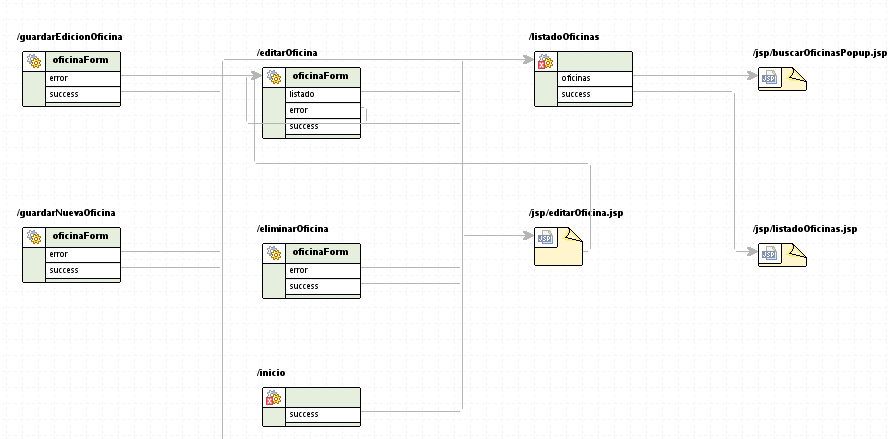

Struts
Herramientas para el trabajo con Struts: JBoss Tools
Como hemos visto en las anteriores sesiones dedicadas a Struts, el framework presenta una serie de problemas, debido sobre todo a su antigüedad. Aunque la filosofía básica de MVC es tan válida y sigue tan vigente en aplicaciones web como cuando Struts apareció, la implementación que hace Struts de ésta es poco flexible y sobre todo farragosa.
En este contexto es útil disponer de herramientas integradas en el IDE que nos ayuden a editar y verificar de manera más cómoda los múltiples ficheros de configuración de Struts. Una vez asimilado el procedimiento de trabajo con Struts, podemos pasar a usar herramientas que nos permitan aumentar la productividad. Evidentemente estas herramientas no solucionan los problemas de Struts, pero al menos ocultan la complejidad y validan automáticamente ciertos aspectos tediosos de comprobar a mano.
De entre los plugins de Struts 1.x disponibles para Eclipse, probablemente el más completo sea JBoss Tools, un conjunto de plugins que aunque desarrollados bajo el "paraguas" de JBoss no sirven únicamente para este servidor. En realidad proporcionan un completo entorno de desarrollo web para editar visualmente ficheros de configuración, JSPs, HTML y trabajar con Struts, JSF y otras tecnologías "estándares" en JavaEE, además de algunas propias de JBoss.
Para instalar los plugins, ir a la opción Help > Software updates... del menú de Eclipse. En el cuadro de diálogo pulsar sobre el botón Add site.... Hay que añadir el sitio http://download.jboss.org/jbosstools/updates/development. En el momento de imprimir estos apuntes, la versión de desarrollo (en beta) es la necesaria para el Eclipse 3.4. Será necesario instalar como mínimo los plugins:
- JBossAs Tools
- RichFaces VPE Feature
- Struts tools
Una vez terminada la descarga de los plugins, Eclipse nos pedirá confirmación para rearrancar. En el siguiente apartado veremos el uso de dichos plugins.
Struts en SIGEM. El módulo de administración del registro
Struts se usa en múltiples proyectos de SIGEM. Probablemente la manera más sencilla de localizarlos sea a través del fichero de configuración struts-config.xml, que normalmente reside en WEB-INF. En realidad, como ya vimos, el nombre y localización de este fichero es totalmente configurable, pero habitualmente no se suele cambiar. Un simple find -name struts-config.xml nos da una lista con los proyectos que usan Struts.
./SIGEM_AdministracionWeb/WEB-INF/struts-config.xml ./SIGEM_TramitacionWeb/WEB-INF/struts-config.xml ./SIGEM_ArchivoWeb/WEB-INF/struts-config.xml ./SIGEM_RepositoriosDocumentalesWeb/WEB-INF/struts-config.xml ./SIGEM_RegistroTelematicoWeb/WEB-INF/struts-config.xml ./SIGEM_PagoElectronicoWeb/WEB-INF/struts-config.xml ./SIGEM_ConsultaWeb/WEB-INF/struts-config.xml ./SIGEM_RegistroPresencialAdminWeb/WEB-INF/struts-config.xml ./SIGEM_GeoLocalizacionWeb/WEB-INF/struts-config.xml ./SIGEM_EstructuraWeb/WEB-INF/struts-config.xml ./SIGEM_CatalogoTramitesWeb/WEB-INF/struts-config.xml ./SIGEM_AutenticacionAdministracionWeb/WEB-INF/struts-config.xml ./SIGEM_CatalogoProcedimientosWeb/WEB-INF/struts-config.xml ./SIGEM_AutenticacionWeb/WEB-INF/struts-config.xml ./SIGEM_CertificacionWeb/WEB-INF/struts-config.xml ./SIGEM_AutenticacionBackOfficeWeb/WEB-INF/struts-config.xml ./SIGEM_AdministracionUsuariosWeb/WEB-INF/struts-config.xml ./SIGEM_NotificacionWeb/WEB-INF/struts-config.xml
En todos los casos, la versión usada parece ser la 1.1, probablemente por el tiempo que ha llevado desarrollándose SIGEM.
Importación y configuración del workspace
De entre los módulos que usan Struts, a priori el más relacionado con lo que hemos visto de SIGEM hasta el momento es el de administración del registro.
El workspace incluido en los enlaces de la sesión contiene los proyectos necesarios para ejecutar dicho módulo. Al igual que en otras sesiones, ha sido necesario corregir deficiencias en la configuración original de los proyectos y añadir dependencias que no estaban especificadas.
Como es habitual, para probar el proyecto, hay que arrancar primero el servidor de base de datos
> su postgres > pg_ctl start -D /usr/local/pgsql/data
Una vez hecho esto, ponemos en marcha Tomcat desde Eclipse y desde un navegador (vale también Firefox) accedemos a la URL:
http://localhost:8080/SIGEM_RegistroPresencialAdminWeb
Aparecerá la habitual pantalla de login en la que hay que entrar como administrador con contraseña administrador. Si todo va bien, pasados unos momentos (y tras aceptar una serie de avisos relacionados con la validez de los certificados) accederemos al módulo. Debe aparecer una pantalla con un listado de las oficinas de registro existentes.
El módulo permite el alta, baja y modificación de usuarios de registro, libros (entrada y salida), oficinas y unidades administrativas.
Configuración de JBoss Tools
Para trabajar más cómodamente con Struts se recomienda instalar JBoss Tools siguiendo el procedimiento descrito anteriormente.
Una vez hecha la instalación, es necesario configurar el proyecto para que use los plugins, para lo que hay que:
- Pulsar con el botón derecho sobre el proyecto y seleccionar la opción JBoss Tools > Add Struts Capabilities
- Aparecerá un asistente para confirmar la localización de los ficheros de configuración de Struts. Como en SIGEM tanto los nombres como la localización son los habituales, podemos aceptar las opciones que nos dará por defecto, excepto en la última pantalla
- En esta última pantalla aparecerá un error indicando que el proyecto ya está desplegado en Tomcat. Hay que desmarcar la casilla "Tomcat 5.0 server at localhost" que aparece en la parte inferior.
- Se nos pedirá permiso para mostrar una nueva perspectiva llamada "Web development", propia de JBoss Tools y en realidad muy parecida a la Java EE.
Observaréis que al hacer esto han aparecido 5 nuevos errores en el proyecto. Son errores que ya estaban en el struts-config.xml pero que no aparecían porque no había ningún validador que los detectara. Por ahora podemos ignorarlos, ya que no son críticos (de hecho son atributos que "sobran" en ciertas etiquetas y que Struts está ignorando durante la ejecución de la aplicación).
Organización del código de Struts
Como ya hemos comentado, la organización de los ficheros de configuración, librerías, etc. de Struts en SIGEM es la habitual en dicho framework. Vamos a ver la estructura del código propiamente dicha
Para comprobar cómo funciona la parte de Struts del módulo es recomendable hacer una pequeña traza de la ejecución. Los editores de JBoss Tools nos ayudarán en la tarea, mostrándonos los ficheros de configuración de forma gráfica y más intuitiva que en modo texto.
- En el apartado welcome-files del web.xml podemos observar que la página principal es jsp/index.jsp. Esta página actúa simplemente de redirector a inicio.do (también coloca el identificador de la entidad actual como un parámetro más de la petición a inicio.do)
- Como era de esperar, las URL del tipo .do son acciones de Struts (se puede comprobar
el mapeo en el web.xml). Por tanto, debemos buscar la acción con path /inicio
en el struts-config.xml.
Al hacer doble clic en el struts-config.xml se abrirá el editor de JBoss Tools en lugar del habitual editor XML de Eclipse. Este editor tiene tres modos en el que podemos ver la configuración. El modo por defecto es el gráfico o diagram. Con las solapas de la parte inferior del editor podemos cambiar el modo de visualización:
-
Diagram: muestra el flujo de navegación entre acciones y JSPs de forma gráfica. Para buscar dónde está la acción /inicio
hacemos clic sobre el editor con el botón derecho del ratón y en el menú contextual seleccionamos select element. Buscaremos
la acción deseada en la lista que aparece y el diagrama se moverá para mostrarla:

Podemos observar que la acción tiene un forward llamado success que lleva a la acción /listadoOficinas. Podemos ver el código java de la acción haciendo doble clic sobre su representación en el diagrama
- El modo tree nos permite ver una "ficha" por cada acción en la que aparece su configuración. Es simplemente una forma más sencilla de editar la acción que a través del XML.
- Finalmente, el modo Source nos muestra directamente el XML.
-
Diagram: muestra el flujo de navegación entre acciones y JSPs de forma gráfica. Para buscar dónde está la acción /inicio
hacemos clic sobre el editor con el botón derecho del ratón y en el menú contextual seleccionamos select element. Buscaremos
la acción deseada en la lista que aparece y el diagrama se moverá para mostrarla:
- Obsérvese que la clase InicioAction es una subclase de otra de SIGEM (RPAdminWebAction) que a su vez hereda del Action de Struts. RPAdminWebAction se encarga de comprobar los permisos de acceso y por eso todas las acciones del módulo heredan de ella. InicioAction no hace nada y se limita a devolver success.
- Dicho resultado lleva a ListadoOficinasAction que localiza un objeto de la capa de negocio encargado de las operaciones de administración. Dicho objeto implementa el interfaz ServicioRPAdmin y en este caso lo necesitamos para listar las oficinas de registro.
- El listado de oficinas se modela en SIGEM como un objeto de la clase Oficinas. Dicho objeto simplemente encapsula una lista de objetos de la clase Oficina. El objeto se coloca como un atributo de request llamado oficinas. Finalmente se devuelve el forward success
- Como se puede ver en el diagrama del struts-config.xml dicho forward nos lleva a /jsp/listadoOficinas.jsp.
- En este JSP (y en otros del módulo) se hace un uso extensivo de las taglibs de Struts y de alguna taglib adicional. Vamos a verlo con un poco más de detalle.
Uso de taglibs
Como se ha comentado, SIGEM hace un uso extensivo de varias taglibs de Struts. Quizá demasiado extensivo, probablemente debido a la antigüedad del software, ya que como vimos, algunas taglibs dejaron de estar recomendadas por los propios desarrolladores de Struts tras la aparición de JSTL.
Como ya hemos visto, un uso típico de las taglibs de Struts es en la internacionalización. En la página /jsp/listadoOficinas.jsp se hace uso en varios lugares de bean:message para mostrar mensajes internacionalizados. Buscando en el struts-config.xml podemos ver dónde están almacenados los ficheros con los mensajes. Como ejercicio se recomienda hacer esta búsqueda teniendo en cuenta que el nombre físico de los ficheros será el mostrado aquí con el añadido del código del locale y la extensión .properties, y que dichos ficheros deben residir en el classpath (es decir, que se colocan en las carpetas de código fuente).
La página usa otra taglib no propia de Struts pero muy conocida en aplicaciones web Java: displaytag. Esta librería se usa para mostrar tablas de datos. Veamos de la línea 56 en adelante de /jsp/listadoOficinas.jsp.
<display:table name="oficinas.lista" uid="fila" class="table-display-tag"
requestURI="/listadoOficinas.do" class="tablaListado" sort="page"
style="width:100%">
<display:column property="codigo"
titleKey="ieci.tecdoc.sgm.rpadmin.oficinas.codigo"
sortable="false" style="width: 15%;"/>
...
En displaytag, cada fila de la tabla se saca de un objeto de una colección. En nuestro caso, oficinas.lista es una expresión en EL que se refiere al método getLista() del atributo oficina que la acción colocó en el ámbito de request. Dicho método devuelve un List de Oficina
displaytag prevé la posibilidad de ordenar las filas clicando en el encabezado de cada columna. Por desgracia, esta ordenación se supone implementada en el servidor. El método que la realiza es el llamado a través de la URL requestURI.
Como es de esperar, cada columna se saca de un getter de la clase Oficina. Aquí solo mostramos el primero. El atributo property indica la propiedad a mostrar (a través del getter). La propiedad titleKey representa la clave en el fichero de mensajes de Struts. Displaytags accede automáticamente al fichero apropiado trabajando en combinación con Struts. Finalmente, el atributo sortable indica que no podemos clicar en la cabecera de la columna para solicitar al servidor la reordenación (ya que la acción de listar oficinas no la implementa).
Uso de ActionForms
Como es habitual en Struts, las operaciones que implican edición de datos usan ActionForms. Como ejemplo, vamos a ver la edición de los datos de una oficina de registro.
La edición de oficinas de registro la implementa la acción en el path /editarOficina. Podemos observar en el struts-config.xml que dicha acción aparece asociada al ActionForm de nombre simbólico oficinaForm.
Podemos ver que la clase que implementa el actionform es OficinaForm y que hereda de ValidatorActionForm, lo que indica que se está usando el plugin validator para la validación de los campos. Obsérvese también que debido a las limitaciones ya discutidas de los actionforms, todas las propiedades son de tipo String.
La acción de editar oficina se implementa en la clase java EditarOficinaAction
- Se obtienen los valores para los cuadros desplegables del formulario de edición, que se colocan en request
- Con el "id" de la oficina se obtiene un objeto de negocio OficinaBean a través del ServicioRPAdmin. Como ya hemos visto durante las sesiones de Struts, los actionforms y los objetos de negocio son distintos, básicamente por la limitación en los tipos de datos del actionform, pero también porque un actionform representa el interfaz y no el negocio. Sea como sea, esto nos obliga a copiar los datos desde el objeto de negocio (OficinaBean) al actionform (OficinaForm). En SIGEM se usa para esta tarea la librería BeanUtils, el mismo método que hemos visto en el módulo de Struts y que de hecho es el más habitual en aplicaciones que usan Struts 1.x.
La página de edición de oficina usa, como era de esperar, las etiquetas de la taglib HTML de struts para rellenar los valores de los campos del formulario.
La validación se hace a través del plugin validator, lo que quiere decir que está definida en validation.xml. Podemos observar en dicho archivo los campos que se están validando. En este caso el name del form se refiere al path de la acción en lugar de al actionform (ambas formas son igualmente válidas en Struts, aunque nosotros hasta ahora solo habíamos usado la segunda).
Finalmente, la clase GuardarOficinaAction es la que se encarga de recibir el actionform con los datos del formulario y guardar el objeto de negocio. La llamada a dicha acción se realiza a través de javascript, por lo que no aparece correctamente reflejada en el editor visual de JBoss Tools. En la acción se realiza el paso inverso a la edición, es decir, la copia desde el actionform al objeto de negocio mediante BeanUtils.
Ejercicio propuesto: validación de datos
Si se revisa la validación de datos de la edición de oficinas, puede verse que ninguno de los campos de la solapa "dirección" del formulario se valida. Se propone como ejercicio:
- Modificar el validation.xml para incluir al menos los campos domicilio, ciudad, código postal y provincia como requeridos. Además el código postal debe ser un número de 5 dígitos (usar para esto el validador de "mask").
- Modificar la acción de editar oficina para que genere también los valores para el cuadro desplegable con las provincias (como es simplemente un ejercicio, no es necesario introducirlas todas, con unas cuantas bastará).
- Modificar los ficheros .properties para añadir el mensaje de error asociado al código postal.
Ejercicio propuesto: extractos
Este ejercicio intenta obtener un mejor conocimiento de las diferentes capas de SIGEM introduciendo como excusa la idea de "extractos": razones comunes para dar de alta un registro en un libro de entrada o de salida. Estos extractos deben aparecer asociados a un libro y supuestamente en el registro deben poder elegirse como "plantillas" para un registro dado.
Hay que tener presente que el objetivo, como ya se ha dicho, es hacer un ejercicio, no implementar una característica "realista". Esta implementación no es más que un punto de partida para tareas "más serias".
Los pasos se describen a continuación. Podéis copiar y pegar el código de la página o bien bajaros directamente todos los archivos.
- Lo primero es crear una nueva tabla de extractos en la BD. Desde el administrador de Postgres
ejecutaremos el siguiente SQL:
CREATE TABLE extractos ( texto character varying(80), entidad character varying(10), id serial NOT NULL, abr character varying(4), idlibro integer, CONSTRAINT pk PRIMARY KEY (id) ) WITH (OIDS=FALSE); ALTER TABLE extractos OWNER TO postgres;
Un extracto es un texto, una abreviatura (que escribirá la persona que dé de alta el registro) y un id. Contiene campos que lo relacionan con un libro de registro y una entidad (que evidentemente deberían ser claves ajenas en una implementación "seria"). -
Transfer Object: necesitamos una clase para "empaquetar" los datos
de un extracto. La crearemos en el proyecto "SIGEM_Core". Como vemos, no es más que un javabean
convencional.
package ieci.tecdoc.sgm.core.services.rpadmin; public class ExtractoBean { private int cod; private String abreviatura; private String texto; private int idLibro; public int getCod() { return cod; } public void setCod(int cod) { this.cod = cod; } public String getTexto() { return texto; } public void setTexto(String texto) { this.texto = texto; } public int getIdLibro() { return idLibro; } public void setIdLibro(int idLibro) { this.idLibro = idLibro; } public String getAbreviatura() { return abreviatura; } public void setAbreviatura(String abreviatura) { this.abreviatura = abreviatura; } } -
Capa DAO: crearemos la siguiente clase en el proyecto "SIGEM_RegistroPresencialAdmin",
que se ocupará del acceso a datos
package ieci.tecdoc.sgm.rpadmin.database; import java.sql.Connection; import java.sql.PreparedStatement; import java.sql.ResultSet; import java.sql.Statement; import java.util.ArrayList; import java.util.List; import javax.naming.Context; import javax.naming.InitialContext; import javax.naming.NamingException; import javax.sql.DataSource; import ieci.tecdoc.sgm.core.services.rpadmin.ExtractoBean; public class ExtractoDAO { private DataSource ds; private String SQL_INSERT="insert into extractos(abr,texto,idLibro,entidad) values(?,?,?,?)"; private String SQL_SELECT="select * from extractos where idLibro=? and entidad=? order by texto"; public ExtractoDAO() { try { Context ctx = new InitialContext(); ds = (DataSource) ctx.lookup("java:comp/env/jdbc/registroDS_000"); } catch(NamingException ne) { System.out.println("ERROR" + ne); } } public void guardarExtracto(ExtractoBean extracto, String entidad) { try { Connection con = ds.getConnection(); PreparedStatement ps = con.prepareStatement(SQL_INSERT); ps.setString(1, extracto.getAbreviatura()); ps.setString(2, extracto.getTexto()); ps.setInt(3, extracto.getIdLibro()); ps.setString(4, entidad); ps.executeUpdate(); con.close(); } catch(Exception e) { System.out.println("ERROR" + e); } } public List listarExtractos(int idLibro, String entidad) { try { Connection con = ds.getConnection(); PreparedStatement sentencia = con.prepareStatement(SQL_SELECT); sentencia.setInt(1, idLibro); sentencia.setString(2, entidad); ResultSet rs = sentencia.executeQuery(); List res = new ArrayList(); while(rs.next()) { ExtractoBean extracto = new ExtractoBean(); extracto.setAbreviatura(rs.getString("abr")); extracto.setTexto(rs.getString("texto")); extracto.setCod(rs.getInt("id")); extracto.setIdLibro(rs.getInt("idlibro")); res.add(extracto); } con.close(); return res; } catch(Exception e) { System.out.println("ERROR" + e); return null; } } } -
Capa de negocio: en el proyecto "SIGEM_RegistroPresencialAdmin"
añadiremos al final del código del "ServicioRPAdminAdapter" los siguientes métodos
public void guardarExtracto(ExtractoBean extracto, Entidad entidad) throws RPAdminException { ExtractoDAO edao = new ExtractoDAO(); edao.guardarExtracto(extracto, entidad.getIdentificador()); } public List listarExtractos(int idLibro, Entidad entidad) throws RPAdminException { try { ExtractoDAO edao = new ExtractoDAO(); return edao.listarExtractos(idLibro, entidad.getIdentificador()); } catch(Exception e) { logger.error("error en listar extractos",e); throw new RPAdminException("error en listar extractos", e); } }Estos métodos no hacen más que "pasar la pelota" a la capa DAO haciendo además gestión de excepciones. La clase ServicioRPAdminAdapter es la encargada de implementar todos los métodos de negocio para la administración de registro, de ahí que metamos el código en ella. -
Capa web, acción de mostrar los extractos: modificar la acción de editar libro para que aparezcan
los extractos. El archivo quedará:
54 request.setAttribute("nombre", nombre); 55 request.getSession(false).setAttribute("idLibro", String.valueOf(libroForm.getId())); 56 57 int idLibro = Integer.parseInt(libroForm.getId()); 58 ServicioRPAdminAdapter serv = (ServicioRPAdminAdapter) oServicio; 59 request.setAttribute("extractos", serv.listarExtractos(idLibro, 60 SesionHelper.obtenerEntidad(request))); 61} return mapping.findForward("success"); - Capa web, visualizar extractos en el JSP: Usar el siguiente editarLibro.jsp, en el que se introducen campos para introducir extractos y visualizar los existentes.
-
Capa web, acción de guardar extractos. Esta acción es nueva, y habrá que
mapearla en el struts-config.xml con la URL "guardarExtracto.do", que es llamada en el JSP
al guardar un extracto
package ieci.tecdoc.sgm.rpadmin.struts.acciones.extractos; import javax.servlet.http.HttpServletRequest; import javax.servlet.http.HttpServletResponse; import org.apache.struts.action.ActionForm; import org.apache.struts.action.ActionForward; import org.apache.struts.action.ActionMapping; import ieci.tecdoc.sgm.core.services.LocalizadorServicios; import ieci.tecdoc.sgm.core.services.rpadmin.ExtractoBean; import ieci.tecdoc.sgm.core.services.rpadmin.OptionsBean; import ieci.tecdoc.sgm.core.services.rpadmin.ServicioRPAdmin; import ieci.tecdoc.sgm.rpadmin.ServicioRPAdminAdapter; import ieci.tecdoc.sgm.rpadmin.struts.acciones.RPAdminWebAction; import ieci.tecdoc.sgm.rpadmin.struts.util.SesionHelper; public class GuardarExtractoAction extends RPAdminWebAction { public ActionForward executeAction(ActionMapping mapping, ActionForm form, HttpServletRequest request, HttpServletResponse response) throws Exception { //copiar datos de la petición en el TO ExtractoBean extracto = new ExtractoBean(); extracto.setTexto(request.getParameter("textoExtracto")); extracto.setAbreviatura(request.getParameter("abrExtracto")); extracto.setIdLibro(Integer.parseInt(request.getParameter("id"))); //Llamar a negocio para que guarde el TO ServicioRPAdminAdapter oServicio = (ServicioRPAdminAdapter) LocalizadorServicios.getServicioRPAdmin(); oServicio.guardarExtracto(extracto, SesionHelper.obtenerEntidad(request)); return mapping.findForward("success"); } }